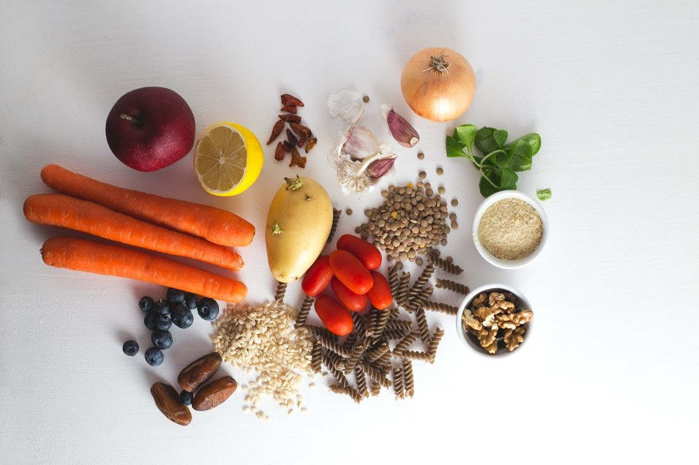
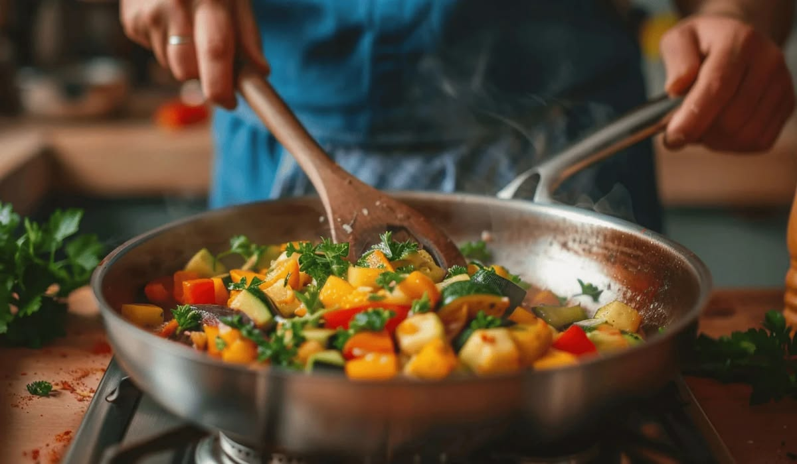
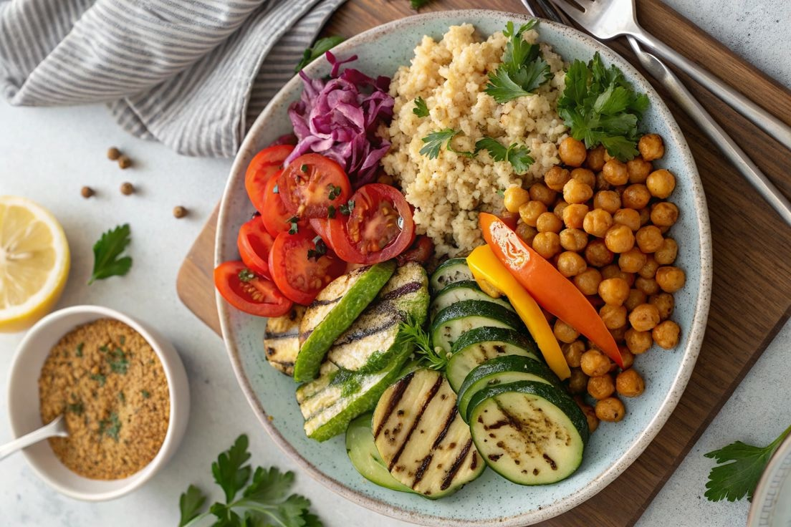

Aprende los cortes basicos para aprovecharal maximo tus vegetales.
TUTORIALES DE
COCINA VERDE
Explora tecnicas de la cocina vegetariana de manera practica.
Descarga nuestras guias paso a paso para cocinar en casa.
Averigua cuanto tiene de proteina, hidratos, etc nuestras recetas.
Averigua porque son tan importantes los igredientes organicos.
¿Como hacer un ...?
Incorpora verduras a tu dieta con este rico plato
Resumen de los talleres
Aprendé a dominar 5 recetas vegetarianas en 4 semanas
Descubrí el paso a paso para transformar ingredientes frescos de origen vegetal en comidas increíbles.

Ingredientes esenciales
Conocé cuáles son los materiales esenciales que necesitás en tu cocina.

Mejorá tus técnicas de cocina
Desde cortes precisos hasta métodos de cocción increíbles.

Cómo lograr platos equilibrados
Entendé las bases de la nutrición para combinar proteínas y vegetales.
Requerimientos
Técnicas Clave Para
Técnicas Clave Para
Tu Cocina Verde
Dominar la cocina vegetariana no tiene por qué ser complicado ni aburrido. En esta sección vas a encontrar el paso a paso para transformar ingredientes simples en platos increíbles. Nuestros tutoriales están pensados para que aprendas a tu propio ritmo, desde cortes básicos de vegetales hasta métodos de cocción que potencian cada sabor natural. Vas a descubrir cómo lograr texturas perfectas y combinaciones nutritivas sin estresarte en el proceso. Olvidate de las recetas que no salen como en la foto; acá te mostramos los secretos prácticos para que cada comida saludable sea un éxito garantizado en tu casa.
Diseñado para cualquier persona que quiera comer mejor.
No importa si recién arrancás en la cocina o si ya tenés experiencia previa.
Aprendé 100% online desde cualquier dispositivo.
Mirá los tutoriales desde tu compu, tablet o directamente en el celular.
Incluimos una lista con los materiales básicos a usar.
Detallamos qué ingredientes y utensilios vas a necesitar.